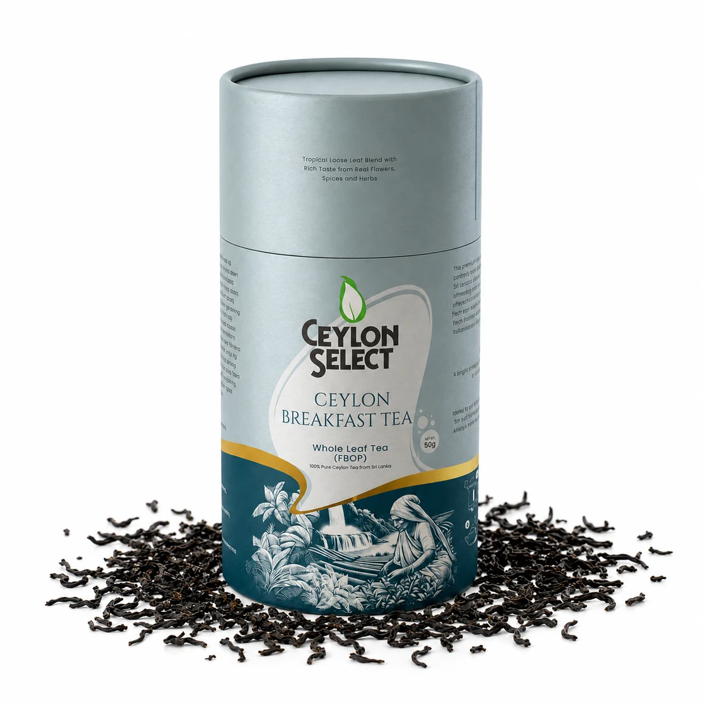
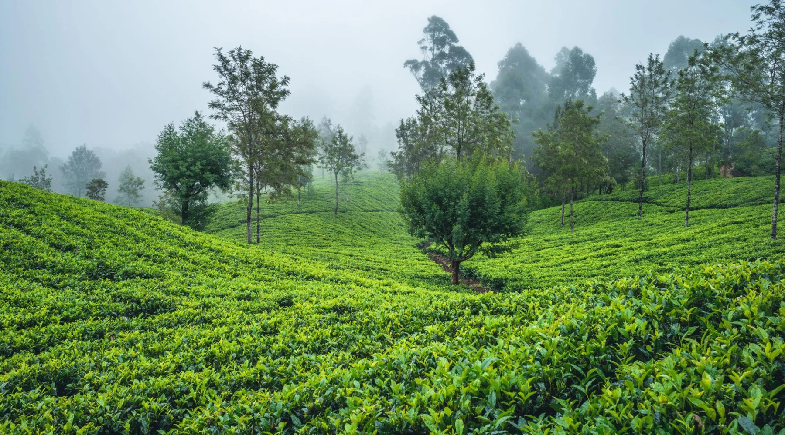
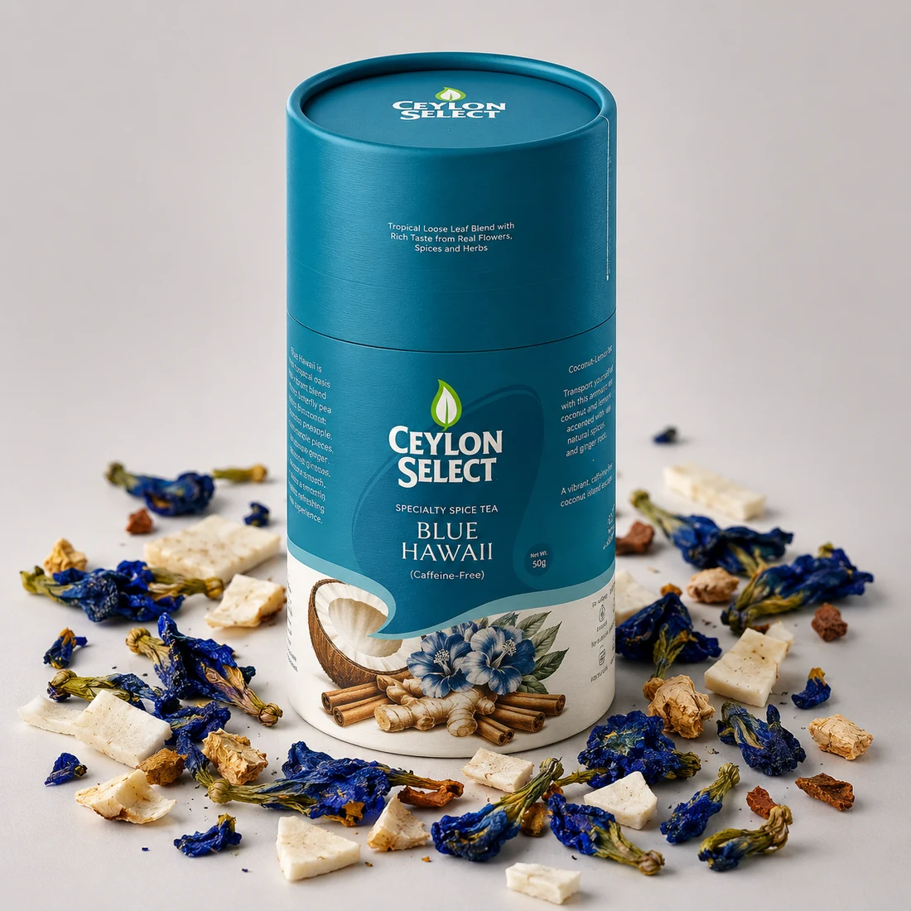
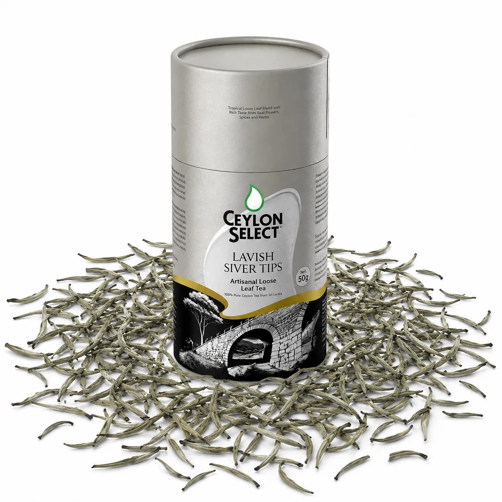

THE CEYLON CLASSICSBegin
Begin
beautifully.
Rich, whole-leaf Ceylon tea.
A familiar ritual, with a little more character.
Ceylon Breakfast Tea$15.99 CAD
CEYLON TEA · BOTANICAL BLENDS
A remarkable leaf. A thoughtful blend.
A moment that belongs to you.
From Sri Lanka,
with intention.

01 / YOUR EVERYDAY RITUAL01 / THE PLACE IT BEGINS

SRI LANKAN HERITAGE
Fine Ceylon leaves and naturally flavourful botanicals.
Selected with care, for the cup you call your own.
Rich, whole-leaf Ceylon tea.
A familiar ritual, with a little more character.
Butterfly pea, coconut, ginger and cinnamon.
A colourful cup with an island spirit.

Delicate white tea buds.
For the moments worth slowing down for.

A TEA FOR YOUR MOMENT
Single-origin favourites. Beautiful botanicals.
Discover all fifteen Ceylon Select teas.
Preparing the tea cabinet…
No teas matched that selection.
03 / THE BREAKFAST TEA RITUAL
A few leaves. Fresh water.
Three minutes that are entirely yours.
One teaspoon of Ceylon Breakfast Tea per cup.
Freshly boiled water at 100°C.
Let the leaves infuse for 3 minutes.
Enjoy it plain, or with a splash of milk.
Then take a moment.
A PERSONAL CONNECTION TO EVERY CUP
Founded by Dami Rodrigo, Ceylon Select brings a family connection to Sri Lanka’s tea industry into a thoughtfully chosen collection of teas and botanical blends.
Traditional inspiration. Naturally flavourful ingredients. A little everyday luxury.
Explore Ceylon Select’s story